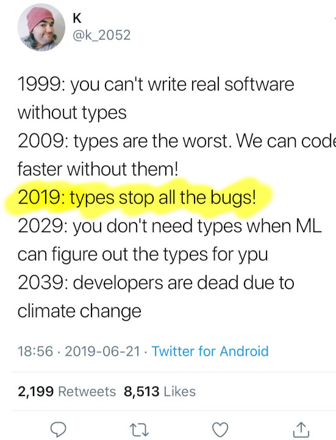

How Thinking in
Python Made Me a Better
Software Engineer
EuroPython 2019
Johnny Dude
Hi, I'm Johnny Dude
|
Software Engineer at TogaNetworks Using Python at work since 2005 I use Python for prototyping Responsible for c++ production code This is my first EuroPython talk |
- Psychological concepts
- How this relates to the
development processes - Experiment
(Non scientific)
Psychological Concepts
Trying not to think about
something, makes thinking
about it more likely
something, makes thinking
about it more likely
The number of objects an
average human can hold in
working memory is 7 ± 2
average human can hold in
working memory is 7 ± 2
Anything that occupies
your working memory reduces
your ability to think
your working memory reduces
your ability to think
Capital of France
Priming is a technique whereby exposure
to one stimulus influences a response
to a subsequent stimulus, without
conscious guidance or intention
to one stimulus influences a response
to a subsequent stimulus, without
conscious guidance or intention
You cannot prevent it
Task switching reduces
your productivity time
Fluency is the ability
to do an activity with little, or
no conscious effort
to do an activity with little, or
no conscious effort


How This Relates to
the Development Processes
Immediate Feedback
def get_biggest_files(n, path='.'): lines = system(f'du -a {path}').splitlines() pairs = [line.split('\t') for line in lines] return [name for size, name in nlargest(n, pairs)]
>>> n, path = 2, 'small folder' >>> lines = system(f'du -a {path}').splitlines() >>> lines[:2] ['8\t./darker.css', '32\t./index.html']
>>> n, path = 2, 'small folder' >>> lines = system(f'du -a {path}').splitlines() >>> lines[:2] ['8\t./darker.css', '32\t./index.html'] >>> pairs = [line.split('\t') for line in lines] >>> pairs[:2] [['8', './darker.css'], ['32', './index.html']]
>>> n, path = 2, 'small folder' >>> lines = system(f'du -a {path}').splitlines() >>> lines[:2] ['8\t./darker.css', '32\t./index.html'] >>> pairs = [line.split('\t') for line in lines] >>> pairs[:2] [['8', './darker.css'], ['32', './index.html']] >>> nlargest(n, pairs) [['96', './.git/objects/d1/31af6800b725b05b...'], ['912', './images/repr.jpg'], ['900', './.git/objects/20']]
>>> n, path = 2, 'small folder' >>> lines = system(f'du -a {path}').splitlines() >>> lines[:2] ['8\t./darker.css', '32\t./index.html'] >>> pairs = [line.split('\t') for line in lines] >>> pairs[:2] [['8', './darker.css'], ['32', './index.html']] >>> nlargest(n, pairs) [['96', './.git/objects/d1/31af6800b725b05b...'], ['912', './images/repr.jpg'], ['900', './.git/objects/20']] >>> [name for size, name in nlargest(n, pairs)] ...
Learn faster
Catch bugs earlier
Confidence that your code works,
without concious effort
without concious effort
Object's API
& Representation
[ { "name": "Tyler Durden", "age": 35, "sibling":[] }, { "name": "Brad Pitt", "age": 56, "sibling":["Doug", "Julie"] }, { "name": "Mia Wallace", "age": 25, "sibling":[] }, { "name": "Uma Thurman", "age": 49, "sibling":[...] }, ]
A list of strings,
optimized for filtering items
matching a regular expression
optimized for filtering items
matching a regular expression
"Tyler Durden\nBrad Pitt\nMia Wallace\nUma Thurman\n"
["Tyler Durden", "Brad Pitt", "Mia Wallace", "Uma Thurman"]
A dict with regex searchable string keys
# re searchable keys "A\nB\n" # compact dict { 2: "My Key is B at offset 2" 0: "My key is A at offest 0", }
"Brad Pitt\nMia Wallace\nTyler Durden\nUma Thurman\n" { 22: "Dead", 35: "Alive", 0: "Alive", 10: "Alive" }
{ "Tyler Durden": "Dead", "Uma Thurman": "Alive", "Brad Pitt": "Alive", "Mia Wallace": "Alive" }
"Tyler Durden\nBrad Pitt\nMia Wallace\nUma Thurman\n"
["Tyler Durden", "Brad Pitt", "Mia Wallace", "Uma Thurman"]
Use Standard Representation
If you can read it, you can visualize it, think about it, discuss it with other developers
Counter({ "Walking Dead": 19, "Alive": 7, "Dead": 2, "Not Born": 1, })
Familiar Data Structures & API
{ }
A Developer thinking in Python
- "If we store that in a dictionary..."
A Developer thinking in c++
- "If we store that in a map..."
Listener thinking: ~map...
~ "Why do we need the keys sorted?"
~ "Is there an implementation of frozen map?"
Standards
&
Composability
def f(xs): return [str(x) for x in sorted(xs) if valid(x)]
def f(xs): ys = list(xs) sort(ys) zs = filter(valid, ys) results = map(str, zs) return results
vector<string> f(const vector<int>& xs) { vector<int> ys = xs; sort(ys.begin(), ys.end()); vector<int> zs; copy_if( ys.begin(), ys.end(), back_inserter(zs), valid ); vector<string> results; transform( zs.begin(), zs.end(), back_inserter(results), [](int i){ return to_string(i); } ); return results; }
It is easy to think
with composable tools
than a recipe
with composable tools
than a recipe
Simple is better than Complicated
void f(Object obj) // pass by value void f(Object& obj) // pass by reference void f(Object* obj) // pass by raw pointer void f(Object&& obj) // pass by rvalue void f(shared_ptr<Object> obj) // pass by shared pointer void f(unique_ptr<Object> obj) // pass by unique pointer
void f(shared_ptr<Object> or unique_ptr<Object> obj) // ??
void f(const Object* obj) // object is immutable void f(Object* const obj) // pointer is immutable void f(const Object* const obj) // both are immutable
void f(Object const* obj) // what is immutable?
void f(shared_ptr<Object>& obj) // pass shared pointer // by reference
We can use shared pointers everywhere
But, we cannot stop thinking about...
But, we cannot stop thinking about...
Type Hints
|  |
Do we realy want to
define types and structures before
understanding the problem
and the solution?
Constantly task switching between:
Coding and Type-defining
Coding and Type-defining
How many bits would
I like this integer to have?
I like this integer to have?
What happens when you are wrong?
Lets just use int,
and deal with it later.
and deal with it later.
Prototyping
Prototype is a model
built to test a concept,
and to be learned from
built to test a concept,
and to be learned from
You write it once,
gaining experience in both
understanding the problem, and
understanding a solution
gaining experience in both
understanding the problem, and
understanding a solution
You write it again,
with less things to worry about
and attention for finer details
with less things to worry about
and attention for finer details
Improved Readability
Improved Maintainability
Fewer Bugs
Some things you can do
only in Python
only in Python
TODO: background with both pics!!
Use a dictionary
Define a function with arguments
Define a function with arguments
TODO: background with both pics!!
Think in the language you write
Handle type checking, seperately
Along with many other reasons.
How much of the speedup do we get
from thinking faster?
from thinking faster?
My Experiment
+--+--+--+--+--+--+--+--+--+ +--+--+--+--+--+--+--+--+--+ |S | |Sooooooooooooooooooo | + +--+--+--+--+ + +--+ + + +--+--+--+--+ + o+--+ + | | | | | | | | | | ooo | | +--+ + + + +--+--+ + + +--+ + + + +--+--+o + + | | | | | | | | | | oooooo | | + +--+ +--+--+ +--+--+ + + +--+ +--+--+ o+--+--+ + | | | | | | | | | oooo| | +--+ +--+--+ +--+ + +--+ +--+ +--+--+ o+--+ +--+--+ | | | | | | ooo | | + +--+ +--+--+ +--+--+ + + +--+ +--+--+o +--+--+ + | |E | | |E | +--+--+--+--+--+--+--+--+--+ +--+--+--+--+--+--+--+--+--+
set<Point> calc_path(map<Point, Point> prevs, Point point) { set<Point> results; point = prevs[point]; while (prevs.find(point) != prevs.end()) { results.insert(point); point = prevs[point]; } return results; } auto points = calc_path(prevs, end_point);
def calc_path(prevs, point): point = prevs[point] while point in prevs: yield point point = prevs[point] points = set(calc_path(prevs, end_point))
Why?
What was I Thinking About?
Summary


- Immediate Feedback
- Familiar API and Reresentation
- Composability and Standards
- Prototype in Python
Summary
Think about the way you work
Think about the way you think
Experiment
Thank You
Twitter: @DudeJohnny1219
email: johnny.dude@gmail.com